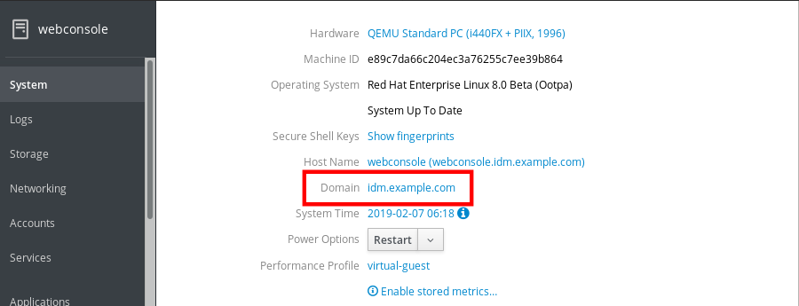
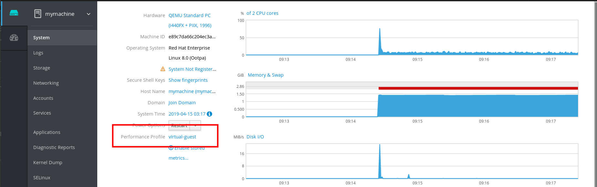
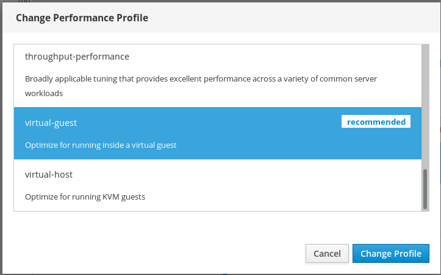

Chapter 9. 在Web控制台中配置系统设置
在本章中，您将学习如何在Web控制台中执行基本系统设置，从而能够：
- 在Web控制台中重新启动或关闭系统。
- 更改系统主机名。
- 将系统加入域。
- 配置时区和时区。
- 更改性能配置文件。
以下过程描述了在Web控制台中执行的系统重新启动。
先决条件
必须安装和访问Web控制台。
有关详细信息，请参阅安装Web控制台 。
程序
登录RHEL 8 Web控制台。
有关详细信息，请参阅登录Web控制台 。
- 单击系统 。
在“ 电源选项”下拉列表中，选择“ 重新启动” 。

- 如果有用户登录系统，请在“ 重新启动”对话框中写入重新启动的原因。
在“ 延迟”下拉列表中，选择时间间隔。

- 单击重启 。
系统将根据您的选择重新启动。
以下过程描述了在Web控制台中执行的系统关闭。
先决条件
必须安装和访问Web控制台。
有关详细信息，请参阅安装Web控制台 。
程序
登录RHEL 8 Web控制台。
有关详细信息，请参阅登录Web控制台 。
- 单击系统 。
在“ 电源选项”下拉列表中，选择“关机” 。
- 如果有用户登录系统，请在“ 关闭”对话框中写入关闭原因。
- 在“ 延迟”下拉列表中，选择时间间隔。
- 单击“关机” 。
系统将根据您的选择关闭。
主机名标识系统。默认情况下，主机名设置为localhost ，但您可以更改它。
主机名由两部分组成：
- 主机名 - 它是标识系统的唯一名称。
- 域 - 如果要在网络中使用计算机并使用名称而不是IP地址，则需要将域添加为主机名后面的后缀。例如：
mymachine.example.com
您还可以在RHEL Web控制台中配置漂亮的主机名。漂亮的主机名允许您输入大写字母，空格等主机名。漂亮的主机名显示在Web控制台中，但它不必与主机名对应。
例：
漂亮的主机名： 我的机器主机名： mymachine真实主机名（完全限定的域名）： mymachine.idm.company.com
主机名存储在/etc/hostname文件中，但是，您可以在Web控制台中设置或更改主机名。
先决条件
必须安装和访问Web控制台。
有关详细信息，请参阅安装Web控制台 。
程序
登录RHEL 8 Web控制台。
有关详细信息，请参阅登录Web控制台 。
- 单击系统 。
单击当前主机名。

- 在“ 更改主机名”对话框中，在“ Pretty Host Name”字段中输入主机名。
在Real Host Name字段中，漂亮的名称将与域名复合。
如果主机名与美特主机名不对应，则可以手动更改主机名。
单击更改 。

要验证主机名是否已正确配置，请尝试从Web控制台注销，并使用新主机名将地址添加到浏览器。

以下过程描述了将RHEL 8系统加入IdM域。
先决条件
- IdM域可以从您要加入的客户端运行并且可以访问。
- IdM域管理员凭据。
程序
登录RHEL Web控制台。
有关详细信息，请参阅登录Web控制台 。
- 打开“ 系统”选项卡。
单击加入域 。

- 在“ 加入域”对话框中，在“ 域地址”字段中输入IdM服务器的主机名。
在“ 身份验证”下拉列表中，选择是否要使用密码或一次性密码进行身份验证。

- 在“ 域管理员名称”字段中，输入IdM管理帐户的用户名。
- 在密码字段中，根据您在上面的“ 身份验证”下拉列表中选择的内容添加密码或一次性密码。
单击加入 。

如果RHEL 8 Web控制台未显示错误，则系统已加入IdM域，您可以在“ 系统”屏幕中看到域名。

警告
如果在“ 系统”屏幕中单击加入的域，系统将显示一个警告对话框，其中包含有关离开域的信息。如果单击“ 离开” ，系统将离开域。

本节介绍如何设置：
- 正确的时区
- NTP服务器提供的自动时间设置。
- 特定的NTP服务器。
先决条件
必须安装和访问Web控制台。
有关详细信息，请参阅安装Web控制台 。
程序
登录RHEL 8 Web控制台。
有关详细信息，请参阅登录Web控制台 。
- 单击系统 。
单击当前系统时间。

- 在“ 更改系统时间”对话框中，根据需要更改时区。
在“ 设置时间”下拉菜单中，选择：
- 手动
- 自动使用NTP服务器 - 这是默认选项。如果系统时间正确，请保持原样。
- 自动使用特定NTP服务器 - 仅当您需要将系统与特定NTP服务器同步并添加服务器的DNS名称或IP地址时，才使用此选项。
单击更改 。

现在，“ 系统”选项卡中提供了更改。
Red Hat Enterprise Linux 8包括性能配置文件优化：
- 使用桌面的系统
- 延迟表现
- 网络性能
- 功耗低
- 虚拟机
以下过程介绍如何在Web控制台中设置性能配置文件。
RHEL 8 Web控制台配置tuned服务。
有关已tuned服务的详细信息，请参阅监视和管理系统状态和性能 。
先决条件
必须安装和访问Web控制台。
有关详细信息，请参阅安装Web控制台 。
程序
登录RHEL 8 Web控制台。
有关详细信息，请参阅登录Web控制台 。
- 单击系统 。
在“ 性能配置文件”字段中，单击当前性能配置文件。

- 在“ 更改性能配置文件”对话框中，根据需要更改配置文件。
单击更改 。

现在，“ 系统”选项卡中提供了更改。